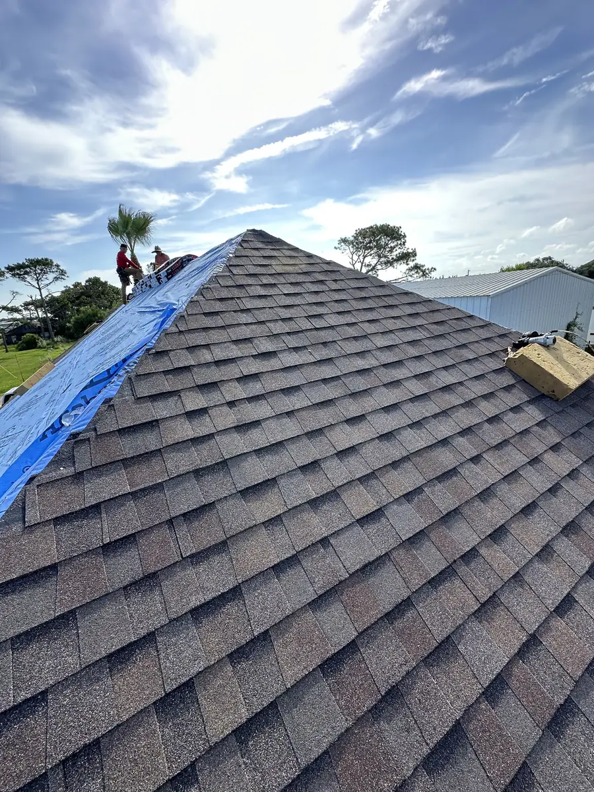
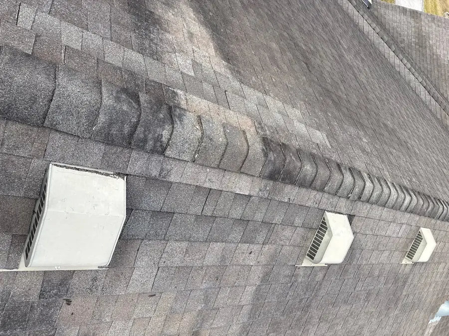
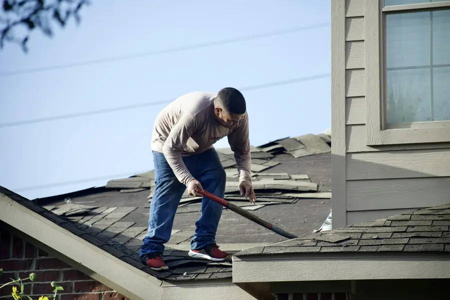
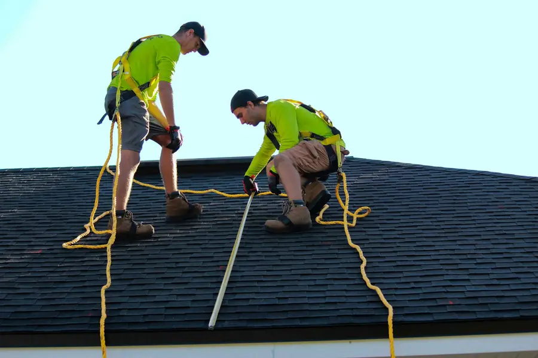

Roof replacement
New-roof jobs come up again and again in customers' Google reviews, from a 25+ year old roof to a home's new roof. Call to talk through yours.
Call for an estimateCall
GFR Roofing repairs and replaces roofs in Victoria, Texas. Customers rate them 5.0 on Google and write about fast replies, clear communication and tidy finishes.
5.032 Google reviews
GFR Roofing is a roofing contractor based in Victoria, Texas. Reviewers say they get a bid, a plan, a quick reply and a clean job site. They also name Joe and Marlee in their reviews.
Their words are further down this page.

Built from the Google listing and what customers mention in their reviews. Prices are not published online, so call for an estimate.
New-roof jobs come up again and again in customers' Google reviews, from a 25+ year old roof to a home's new roof. Call to talk through yours.
Shingle repair is one of the topics Google highlights in reviews. Customers describe repairs finished quickly and left looking clean.
One customer had leaks in the same spot for years while others pointed fingers. GFR found the cause and fixed it, they wrote.
Inspection is another topic Google highlights. Buyers wrote about inspections done efficiently on a house they were purchasing.
A building owner wrote that GFR replaced a flat roof and sent photos of the finished job. Call to ask about yours.
Google lists roof repair for storm and wind damage among the services tagged on reviews. Describe what happened when you call.
Customers mention a broken roof vent sealed and replaced, and an old satellite removed with shingles repaired. Small jobs count too.
A customer had a hole in the roof of a large, steep building. The crew gave a bid, scheduled the repair and cleaned up after.
Based on what customers wrote in their Google reviews. Ask GFR Roofing about the exact process for your job.
Reviewers mention a fast response time and good communication from the start.
Customers describe a bid and a plan before the work was scheduled.
Reviewers write about showing up on time, picking up the trash and photos of the finished roof.



Stock photos for atmosphere. They are not GFR Roofing’s crew or jobs.
I had an amaxing experience with GFR Roofing! I reached out for a bid to have an old satellite removed and shingles repaired, and not only was the estimate fair and straightforward, but Joe came back the same day to complete the repair. The work was done quickly, professionally, and with great attention to detail. The whole process was completely stress-free. I really appreciated the fast response time and reliability. I would absolutely recommend GFR Roofing and wouldn’t hesitate to use them again.
If you need any type of roof done contact these people they are great the nicest people and they do such a good job. It was baking heat and they worked tirelessly. Getting my roof done and did an excellent job. Highly recommend with a good price range.
GFR is great! I needed a new flat roof and I shopped around. GFR had the best price and best plan to get the job done. Also they gave me pictures I could use when I sell my building. A new roof is always a plus in Victoria. I will use them again for any other roofing in Victoria!
Great folks to work with.
I needed my roof repaired before closing date and they delivered. It wasn't a big job, so I was impressed that they took time for my project even though they had bigger ones to take care of. Communication was very good and they were a pleasure to work with. Thank you, Joe and Marlee. Much blessings to your family and business.
We had a large building that had a hole in the roof. The grade is very steep on the roof. The GFR team was very professional, came and gave a bid, scheduled a time for the repair, came on time, repaired, picked up all remaining trash, etc from the repair and left the repair looking perfect! It's holding up great! I personally would recommend the GFR team for any roofing job if your looking for honesty, integrity and a great job!
You can use me as a reference!
I have been getting leaks in my house off and on in the same spot for years. HVAC says it’s the roof, roofer with the builder says it’s the hvac. I decided to get a roofing company not affiliated with my builder and they found the issue and fixed it. Thank you soooo much !!!
I just wanted to take a moment to express how impressed I am with the efficient and professional service GFR Roofing provided during the inspection of the house I'm purchasing. It's not often you come across such professional roofers. If you're in the market and want top-notch service, look no further than GFR Roofing. They are definitely the right company!
I have worked with 4-5 roofers in the Port O’Connor area over the years. Joe was referred to me by another trusted contractor I use locally. Patrick Harrington. I trust Patrick and I am very thankful. Joe was reliable, professional and has my trust going forward. He finally fixed my roof correctly and affordably that at least 2-3 others just couldn’t seem to do.
Selection of verbatim Google reviews, rating as shown on Google November 2026. View the Google profile.
| Monday | 9 AM – 5 PM |
| Tuesday | 9 AM – 5 PM |
| Wednesday | 9 AM – 5 PM |
| Thursday | 9 AM – 5 PM |
| Friday | 9 AM – 5 PM |
| Saturday | 10 AM – 3 PM |
| Sunday | Closed |
Hours as listed on Google. Call to confirm on holidays.
GFR Roofing is a Victoria, TX roofing contractor. A customer in the Port O’Connor area also left a review.
Call (361) 648-7826 or send the request form on the Contact page. Reviewers mention receiving a bid before work started. Ask GFR Roofing what they need to see for your roof.
Monday to Friday 9 AM to 5 PM, Saturday 10 AM to 3 PM, closed Sunday, as listed on Google. Hours can change around holidays, so call to confirm.
GFR Roofing is based in Victoria, Texas. A customer in the Port O’Connor area also left a review. Call to confirm that your address is within reach.
Customers mention shingle roofs, a flat roof on a building and a large steep-roofed building. Call and describe yours.
Prices are not published online and we have not been told whether estimates are free, so please ask when you call. Reviewers describe the pricing as fair.
Call GFR Roofing, tell them what is going on with your roof and ask for an estimate.